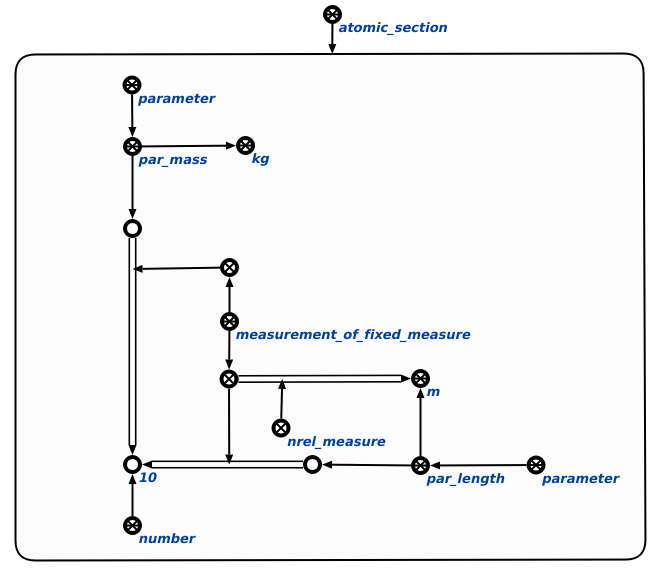
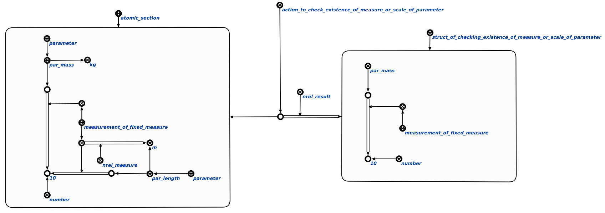

Команда проверки наличия единицы измерения или шкалы у параметра предназначена для выполнения поиска в базе знаний параметра, у которого отсуствуют необходимые конструкции, такие как: измерение по шкале и измерение с фиксированной единицей измерения. Единственным аргументом запроса является структура, в которой производится поиск. Результатом выполнения команды является занесение неправильных конструкций в контур. Пример выполнения агента показан ниже:

